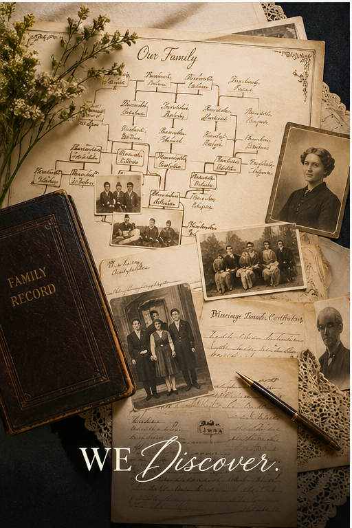
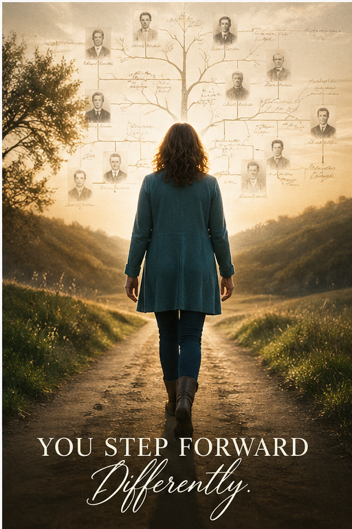

From question to discovery.
A simple, gentle path. Four steps. No surprises in the process — only in what we find.
We Talk.
We start with a free 30-minute discovery call. No script, no pressure — just a real conversation about what you're trying to find and why it matters to you.
Bring whatever you have: names, dates, family rumors, a DNA test, half a story. Or bring nothing but a question. Either is enough to begin.
By the end, you'll know whether I'm the right fit — and exactly what working together would look like.
I Dig.
This is the work. Census records, vital records, immigration manifests, church books, court files, newspaper archives, oral histories, DNA matches. I leave no plausible thread untraced.
Some cases close in two weeks. Others take months. I'll keep you updated along the way — never leaving you in the dark — but I won't rush conclusions. The truth is worth waiting for.
You can step back and let me work, or stay involved at every turn. Your call.

We Discover.
When the research is ready, we sit down together — in person, by video, or by phone — and I walk you through everything. Names, documents, photographs, stories, the whole picture.
You receive a complete written report with sources, family trees, and any supporting documents I've gathered. Yours to keep, share, or pass on.
If findings are emotionally heavy, we go slowly. You set the pace.

You Step Forward Differently.
This is where the real work begins — yours. With clarity about where you come from, you start to understand patterns. You see threads that connect generations. You see yourself differently.
For some, that's enough. For others, it's the beginning of conversations with newly-found family, identity coaching, or simply a quieter knowing of who they are. Either way: you don't walk forward the same.
I'm here for follow-up too. The story doesn't end at the report.
Four steps. One story. Yours.
We Talk
A free, no-pressure call to understand what you're hoping to find.
I Dig
Patient, document-backed research. I don't give up at dead ends.
We Discover
Findings shared in full — with care, clarity, and complete sources.
You Step Forward
With new clarity about who you are and where you're going.
Ready to start with step one?
The first conversation is free. The clarity that follows is priceless.
Book Your Discovery Call